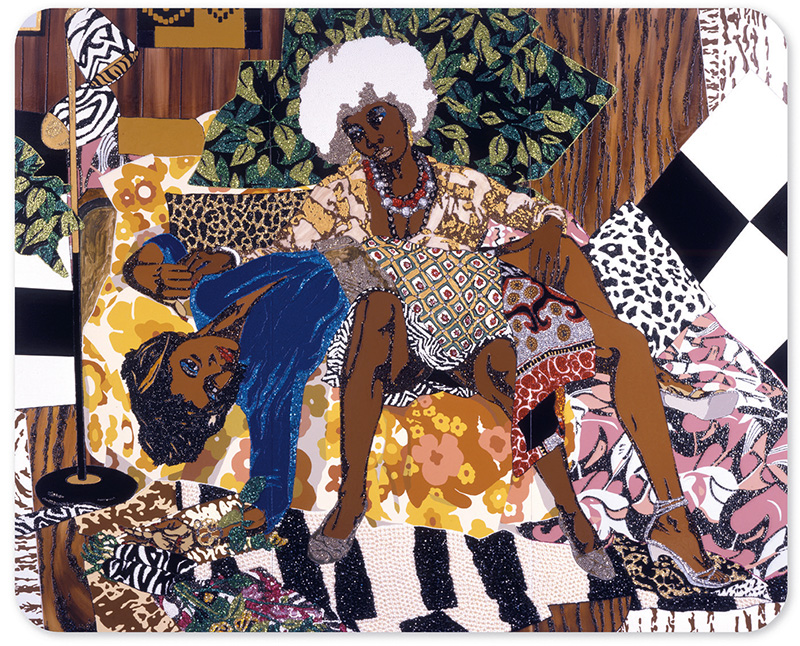
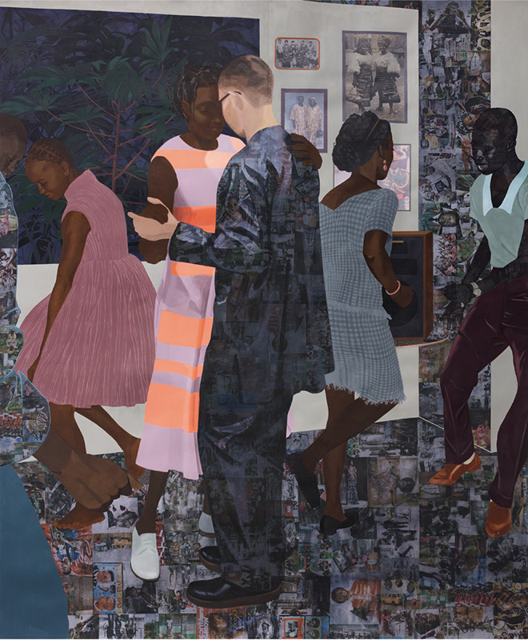
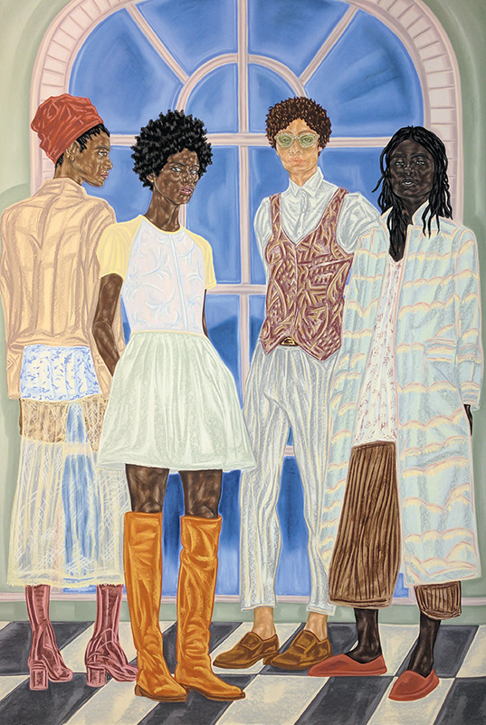
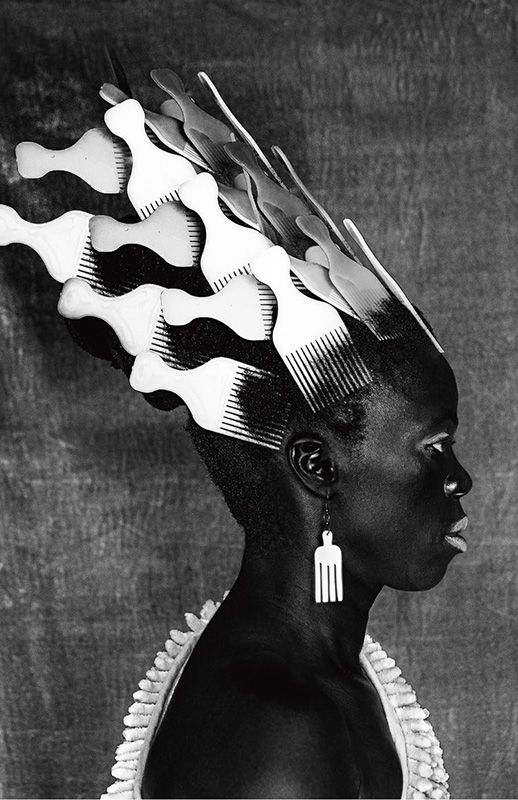
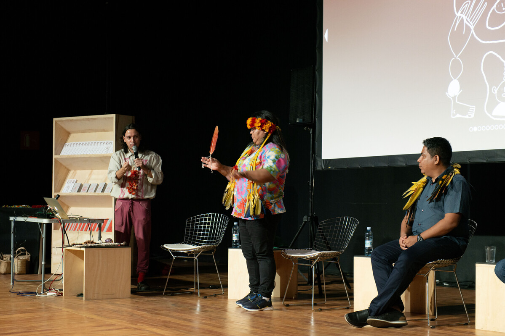
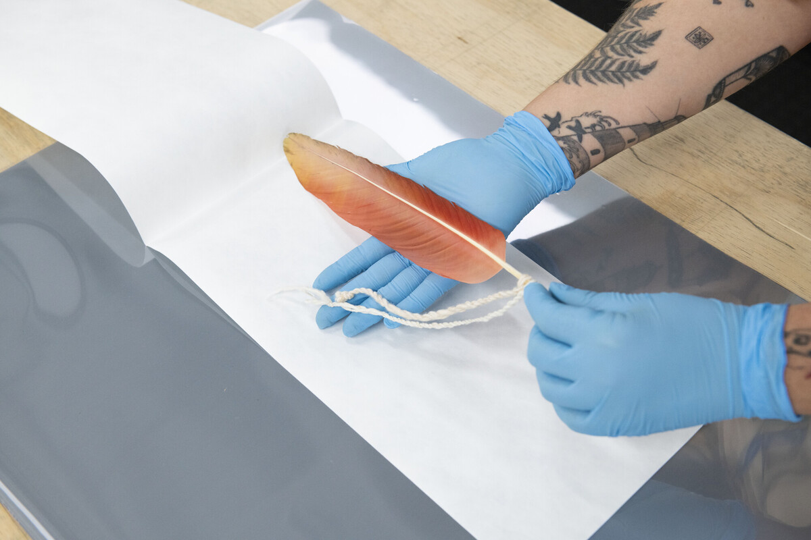
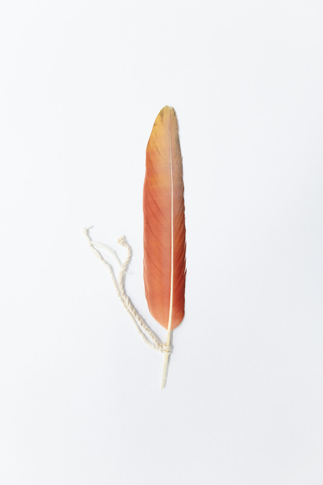

Thomas
Reapropriação de composição canônica.
Desejo, olhar e autoridade no retrato.
Aula 4 · 22 de agosto de 2026 · 150 minutos
Mickalene Thomas · Njideka Akunyili Crosby · Toyin Ojih Odutola · Zanele Muholi
Proposição de trabalho
Presença pode carregar desejo, ambiguidade, vulnerabilidade, opacidade, ficção ou conflito. A questão é saber se ela continua organizada por um regime de objetificação ou se a obra altera olhar, pose, espaço, escala e narrativa. “Contra-arquivo” é um dispositivo didático, não um termo atribuído a Hessel: designa práticas que contrariam arquivos que excluíram, estereotiparam ou tornaram ilegíveis certas vidas.
Hessel: a figuração em disputa
Hessel pergunta se a figuração contemporânea responde ao desejo de humanidade e de “pessoas reais”, à correção de imagens negativas ou ultrapassadas, ao reconhecimento de pessoas queer, não brancas, mulheres e classe trabalhadora, e à necessidade de registrar o presente.
“A representação é importante, e a figuração tem um peso tal que é capaz de promover mudanças.” KATY HESSEL, “Repensando a representação”.
Passagem da Aula 3
Na Aula 3, arquivo apareceu como condição de sobrevivência da memória: documentos, imagens, relatos, museus e instituições tornam uma perda visível, mas também selecionam o que será preservado, classificado e reconhecido. O arquivo organiza acesso, valor e esquecimento.
Nesta aula, usamos “contra-arquivo” para nomear práticas que intervêm nesses critérios. Elas não se situam fora de todo arquivo, nem produzem uma memória pura. Reorganizam quem pode aparecer, quem controla a imagem, que histórias parecem possíveis e como uma comunidade constrói sua permanência.
Evite tratar arquivo e contra-arquivo como termos opostos e estáveis. Um contra-arquivo pode usar museus, exposições, fotografia, coleções e circulação institucional. A diferença não está em escapar das instituições, mas em tornar disputáveis seus critérios de seleção, legibilidade, autoria e memória.
Quatro operações de aparecimento
Reapropriação de composição canônica.
Desejo, olhar e autoridade no retrato.
Interior em camadas.
Diáspora, memória e tempo doméstico.
Ficção e desenho como escrita.
Mito, riqueza, sexualidade e história possível.
Autorretrato e arquivo visual.
Comunidade, sobrevivência e futuro de uma presença negra queer.
A figura não é uma essência: é uma posição formal e política construída.
Evite explicar uma obra apenas por identidade. Thomas reescreve uma economia de olhar; Crosby constrói uma situação temporal; Ojih Odutola confronta uma história única; Muholi articula comunidade e futuro. A palavra de trabalho é operação.
Roteiro · 150 minutos
Em cada bloco, identifique um regime visual herdado e a operação que o desloca. Não se trata de provar influências. A fotografia é central em Muholi e comparece indiretamente nas pinturas de Thomas e Crosby por circulação, colagem e reprodução. O meio é uma ecologia visual, não um compartimento técnico.
Mickalene Thomas

2008. Strass, acrílico e esmalte sobre painel de madeira.
Imagem e créditos conforme apresentação da disciplina.
“Retratos são muito poderosos. Eles têm uma grande representatividade e autoridade no mundo.” MICKALENE THOMAS, 2013, citada por Hessel.
Hessel observa que Thomas dá a amigas, familiares e parceiras amorosas a posição de destaque de retratos de reis e rainhas. Strass, padrões, interior e escala não são adorno: produzem glamour, atenção e uma presença que recusa marginalidade visual.
Hessel relaciona a obra a . Thomas não troca personagens numa composição neutra: altera desejo, postura, interior, matéria e economia de olhar. A comparação deve mostrar dependência histórica e diferença irredutível.
Njideka Akunyili Crosby
Hessel situa um interior que pode sugerir Los Angeles e Lagos, presente e memória, sem uma origem única. Fotografias, tecidos, televisão, objetos, pintura e rituais entram numa superfície que não soma identidades estáveis.
Observe os decalques e sua diferença em relação às áreas pintadas. Chão, roupas, fotografias emolduradas, móveis e figuras organizam como imagens públicas e memórias atravessam o espaço doméstico.

2017. Acrílico, decalques, lápis de cor, carvão e colagem sobre tela.
Hessel afirma que Crosby reivindica retrato, interior e natureza-morta, gêneros com raízes profundas no passado colonial. O interior torna-se campo de migração, família, mídia e memória; a superfície deixa de ser unificada; a experiência diaspórica disputa o próprio gênero. Seu arquivo é uma montagem seletiva, afetiva e material, não um depósito neutro.
Toyin Ojih Odutola

2016–2017. Carvão, pastel e lápis sobre papel.
Ojih Odutola vê a caneta como “instrumento de escrita”, segundo Hessel. Textura, sombra, pele, roupa, arquitetura e perspectiva produzem narrativa. Tons saturados, ângulos e sombras impedem identificação rápida e constroem posição social, mito, intimidade e poder.
Em Vagar determinado (2017), Hessel destaca duas dinastias nigerianas imaginárias, suas coleções e um casamento que organiza riqueza e intimidade. A história é livre do colonialismo, mas sua instabilidade visual lembra que esse mundo não existe sem seus legados e sem a criminalização da homossexualidade na Nigéria. A ficção expõe o que uma história dominante torna imaginável.
Zanele Muholi
“Descobri que a fotografia era um meio de articulação.” ZANELE MUHOLI, citada por Hessel.
Hessel apresenta Muholi como pessoa não binária e ativista visual. Isso não transforma a obra em ilustração de identidade: fotografia articula autorretrato, performance, adorno cotidiano, comunidade, história sul-africana e circulação institucional.
Analise luz, contraste, objeto como coroa ou armadura, olhar, figura e fundo. O autorretrato produz persona múltipla: corpo, personagem, memória e posição política.

2019. Da série Somnyama Ngonyama [Salve, Leoa Negra].
Para Hessel, a prática de Muholi registra e celebra pessoas negras queer sob violência persistente na África do Sul; entrelaça histórias de comunidade, história da arte e paredes de museus; e usa materiais cotidianos como coroas e armaduras. A insistência é: “para que as gerações futuras saibam que estivemos aqui”.
Arquivo não é só conservar imagem: é disputar quem terá existência histórica. Série, título, circulação, colaboração e autorretrato produzem essa infraestrutura. Excesso, máscara, teatralidade e contraste recusam uma essência a ser catalogada.
Fotografia: retrato, performance, arquivo e instituição
Autorretrato como invenção de presença e persona.
Imagem como articulação e proteção de memória futura.
Série, título, circulação e relação com outras pessoas.
Posição visual implicada em violência, desejo e sobrevivência.
A fotografia entra no curso como prática contemporânea de relação, não como cronologia autônoma do meio.
Compare Goldin e Muholi com cuidado. Ambas constroem arquivo de comunidade, mas diferem em série, posição de autora, intimidade, teatralidade e contexto histórico. A comparação rigorosa não reduz ambas a “documentação”.
Comparação e seminário
Thomas reconfigura composição e olhar. Crosby monta interior em camadas. Ojih Odutola inventa mito e genealogia. Muholi constrói presença e arquivo visual. Não se trata de dar visibilidade a sujeitos prontos, mas de construir regimes de relação que possam habitar.
Em grupos, testem uma proposição com duas artistas:
“Opacidade” precisa ser sustentada por camadas, sombras, ângulos, gesto, série, máscara, título ou distância. O risco não deve desaparecer: reapropriação pode depender do cânone que critica; ficção pode ser lida como evasão; visibilidade pode ampliar exposição. A análise mostra como a obra negocia tais riscos.
Síntese e passagem
Thomas desloca autoridade, desejo e pose. Crosby faz do interior uma montagem de memória, migração e história visual. Ojih Odutola usa ficção para contestar o que a história permite imaginar. Muholi transforma fotografia em articulação, presença e arquivo de futuro.
Figuração não resolve a crise de representação. As obras mostram que representar é uma operação de poder e de forma, e que toda presença permanece vulnerável, parcial e disputada.
Caso de estudo: Gustavo Caboco
A pesquisa de Gustavo Caboco, artista visual Wapichana, no Arquivo Histórico Wanda Svevo da Fundação Bienal de São Paulo, foi desenvolvida com Tipuici Manoki. Em vez de preencher uma lacuna com a promessa de uma presença completa, o projeto pergunta o que é um arquivo para os povos indígenas e toma a ausência indígena no próprio arquivo como questão de pesquisa, conversa e elaboração pública.

Mesa com Gustavo Caboco, Almires Martins Guarani, Boe Liberio e Tipuici Manoki durante a 35ª Bienal de São Paulo. 28/10/2023. © Levi Fanan / Fundação Bienal de São Paulo.

Atividade de acondicionamento de documento entregue por Gustavo Caboco ao Arquivo Histórico Wanda Svevo da Fundação Bienal de São Paulo. 19/12/2024. © Levi Fanan / Fundação Bienal de São Paulo.

Atividade de acondicionamento de documento entregue por Gustavo Caboco ao Arquivo Histórico Wanda Svevo da Fundação Bienal de São Paulo. 19/12/2024. © Levi Fanan / Fundação Bienal de São Paulo.
O arquivo deixa de aparecer apenas como repositório de documentos. Torna-se relação, ausência, gesto de entrega, conversa e problema institucional. O acondicionamento não é uma etapa invisível depois da obra: mostra que memória e preservação dependem de materialidade, cuidado e decisão.
Podemos aproximar o projeto da nossa noção didática de contra-arquivo, com cautela: não como rótulo para a obra, mas como pergunta. Que critérios de presença, documento, valor e memória são reabertos quando o arquivo é interrogado a partir de ausências indígenas?
Informações sobre a obra digital e a publicação comissionadas, a pesquisa de Gustavo Caboco e Tipuici Manoki, e a questão sobre arquivo são da Fundação Bienal de São Paulo. “Contra-arquivo” permanece uma ferramenta de leitura da disciplina, não uma categoria atribuída ao projeto pela Bienal ou pelo artista.
Referência e créditos
Leitura-base: HESSEL, Katy. A história da arte sem os homens. Parte Cinco: “Repensando a representação”.
Obras: Mickalene Thomas, La Leçon d’amour (2008); Njideka Akunyili Crosby, Quando tudo vai bem e suave (2017); Toyin Ojih Odutola, Representantes de Estado (2016–2017); Zanele Muholi, Qiniso, As velas, Durban (2019).
“Contra-arquivo”, “regime de aparecimento” e as teses do seminário são dispositivos didáticos da disciplina. Informações de obras, citações e aproximações entre artistas seguem a leitura de Hessel.